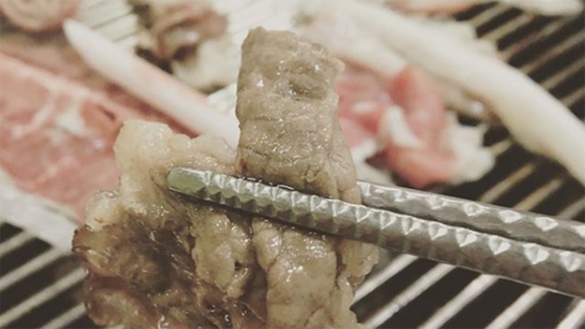
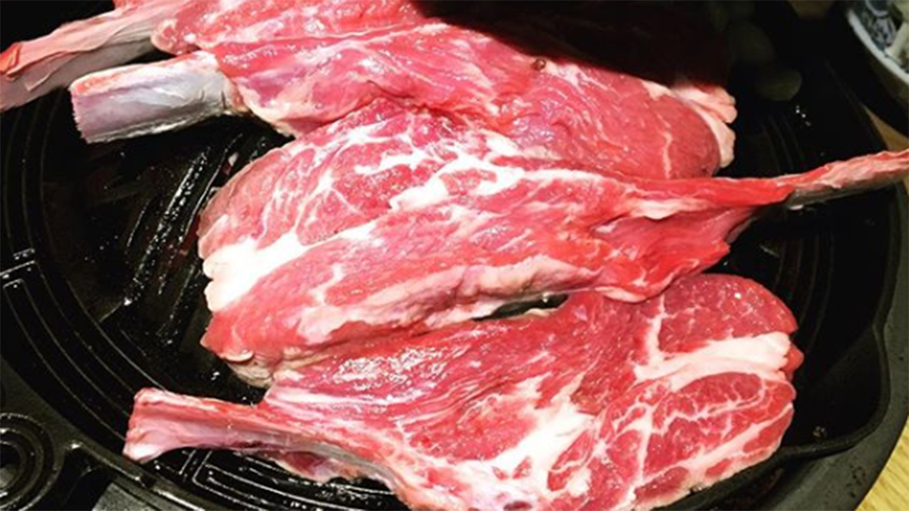
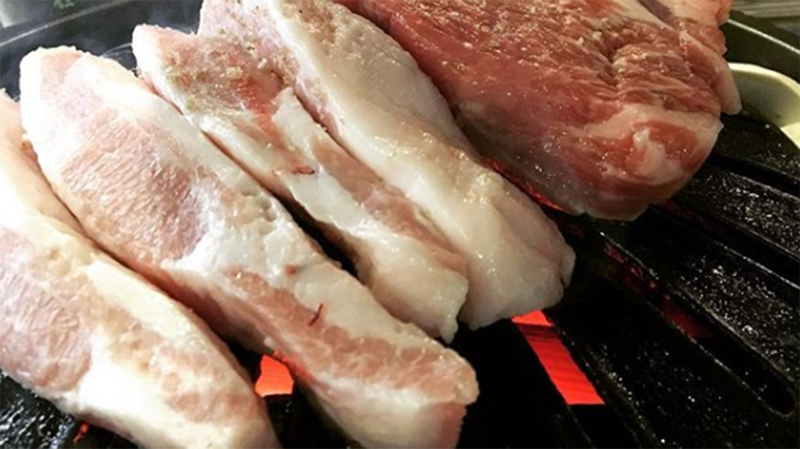
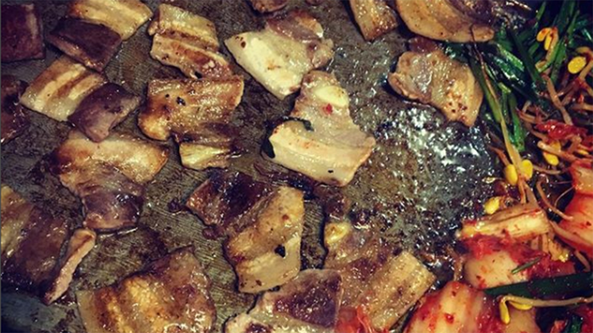
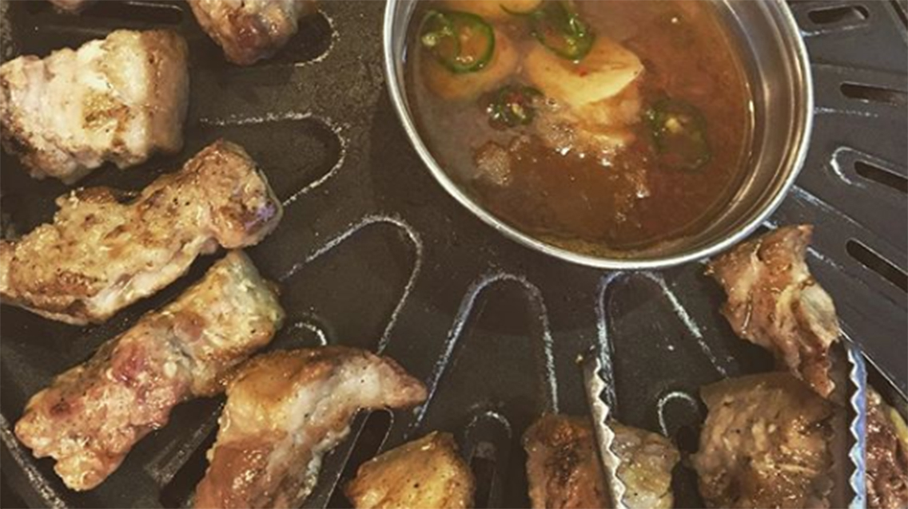
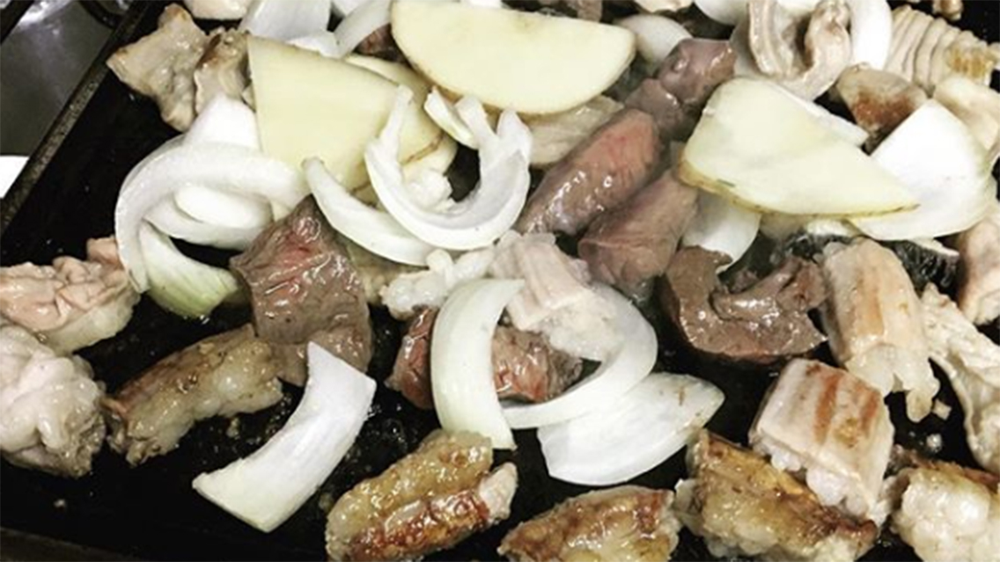

Brisket (차돌백이) at Bong San House (봉산집 본점)
서울 용산구 한강대로62나길 24, 지번: 용산동3가 1-21
1-21 Yongsan-dong 3 Ga, Yongsan-gu, Seoul, South Korea

Photo Attribution: received permission to use photos from original photographer @erist on
Instagram | Cropped and resized from original
Lamb Galbi (양갈비) at Ramuzin (라무진)
서울 동작구 동작대로27길 16-5 (사당동) 1층
1st floor, 16-5 Sadang-dong, Dongjak-gu, Seoul, South Korea

Photo Attribution: received permission to use photos from original photographer @erist on
Instagram | Cropped and resized from original
Jeju Pork BBQ (제주모듬) at House of Meat (고깃집)
서울 은평구 갈현동 254-1
254-1 Galhyun-dong, Eunpyung-gu, Seoul, South Korea

Photo Attribution: received permission to use photos from original photographer @erist on
Instagram | Cropped and resized from original
Pork Belly BBQ (삼겹살) at Pot Lid KBBQ (솥뚜껑 삼겹살)
서울특별시 은평구 갈현동 454-5
454-5 Galhyun-dong, Eunpyung-gu, Seoul, South Korea

Photo Attribution: received permission to use photos from original photographer @erist on
Instagram | Cropped and resized from original
Pork Belly + Skin BBQ (오겹살) at Tamladon (탐라돈)
서울시 마포구 창전동 5-137 1F (송우빌딩 102호)
5-137 Changjeon-dong, Mapo-gu, Seoul, South Korea

Photo Attribution: received permission to use photos from original photographer @erist on
Instagram | Cropped and resized from original
Intenstine Variety (모듬곱창) at Hwangso Gopchang (황소곱창)
서울특별시 관악구 청룡동(봉천동) 877-1
877-1 Bongcheon-dong, Gwanak-gu, Seoul, South Korea

Photo Attribution: received permission to use photos from original photographer @erist on
Instagram | Cropped and resized from original